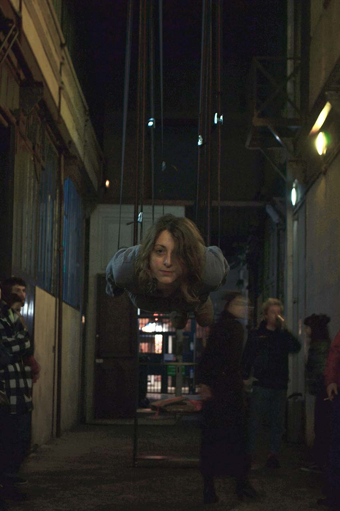

Jessica Arseneau
::: portfolio
Images and projects
A Thousand Times Nothing
2016
Performance
00:40:00
Rencontres Traverse Vidéo, Toulouse, France
Photo credits: R. Larocque


Acte 1.
Lashing straps are holding the body in an horizontal position, approximatively one meter and a half away from the ground. It incarnates moments that are in suspense like those in dramatic works or those of waiting, such as the tiny seconds that occurs just before to see the wining numbers of a lottery or the days that occupants of a house are counting while possibly facing eviction.
It’s stretched for about 25 minutes before and until the audience had fully entered the room.

Acte 2.
The body slowly untangled itself from the strings holding it in the air in order to finally touch the ground.
Acte 3.
A black bookshelf is standing a few meters away from the hall with cardboards, a black marker pen and a drill. The body approaches the shelf and takes a piece of cardboard. With the marker pen it writes “Entracte 2”. The french word for entr'acte. Entr’acte is the moment between two scenes in a play or a concert. It’ a temporal zone where nothing happens. Or can we question when events are happening and when there’s a break, what is hidden, unseen, and even continue in behind the curtains of the show.
The body takes the shelf and makes an awkward dance which accompanies with a wooden cracking music made from the movements. Neither the body adapt itself to the object nor the shelf adapt itself to the body. This choreography continues until the library shelf is held from the lashing straps that were earlier carrying the body.

Acte 4.
Body takes another piece of cardboard and writes “Entracte 3”.
Body takes the drill machine and starts dismantling the structure until it becomes pieces of wood with no architectural shape. Pieces are falling apart, slamming the bricked floor — making a travelling sound through the hallway.

Acte 5.
Another piece of cardboard is taken in order to write “Entracte 4”.
Then, the cardboard is being transformed into a medium sized box. A few smaller pieces of wood that are laying on the ground are taken and somehow tied in and out the cardboard box.
Body pushes the box and its disorderly pieces of wood, leaving the rest behind. It pushes it up to a corder of the hallway, next to the exit door.